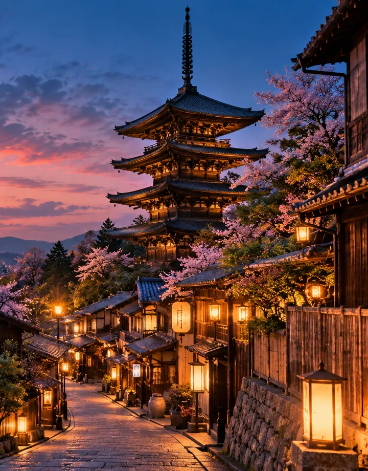
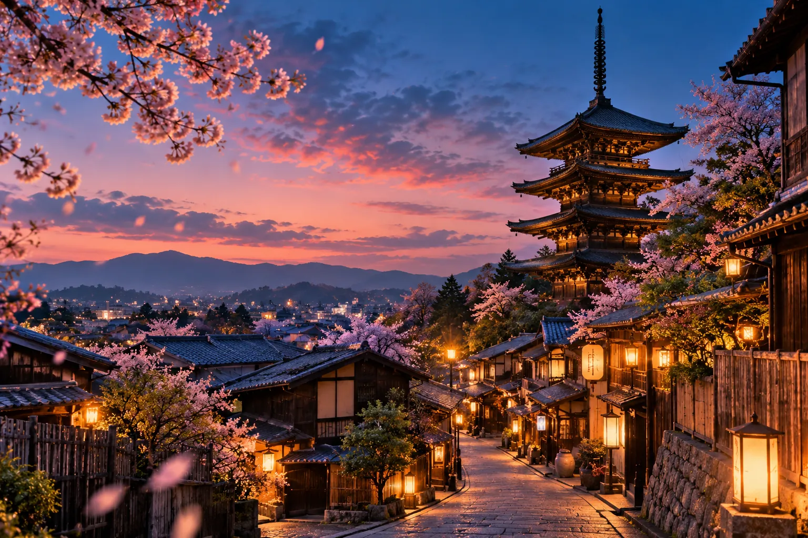
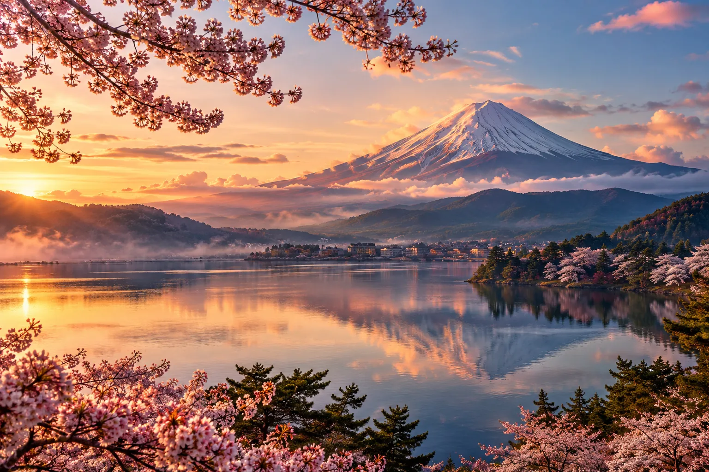

01THE ART OF WANDERING · JAPAN
Đi thật xa.
Để thấy
lòng mình
gần hơn.
Một Nhật Bản không vội. Nơi tiếng gió, sắc hoa và những con đường nhỏ kể chuyện thay lời.
Mở chuyến phiêu lưu 03 điểm đến · vô vàn cảm xúc

風ĐI ĐỂ CẢM NHẬN
Kyoto, Nhật Bản35° N / 135° E
01 / MỘT NHẬT BẢN RIÊNG BẠNKÉO XUỐNG KHÁM PHÁ
01 — THE PLACES
Cứ để tò mò
dẫn lối.
Từ con ngõ dưới tán anh đào đến hồ nước yên lặng bên núi tuyết — mỗi nơi là một thế giới chờ được cảm nhận.
03 ĐIỂM ĐẾN
VUỐT ĐỂ XEM TIẾP

Một phút lặng yên / Kawaguchiko02 — WHY WE WANDER
Không chỉ
là những nơi
ta đặt chân.
Có những kỷ niệm không nằm trong tấm ảnh nào: tiếng mưa khẽ qua mái ngói, hương trà buổi sớm, và cảm giác mình thuộc về một nơi xa lạ.
Chọn cảm xúc cho riêng bạn03 — YOUR KIND OF JAPAN
Bạn muốn Nhật Bản
trông như thế nào?
Không có chuyến đi hoàn hảo cho tất cả. Chỉ có hành trình khiến bạn muốn mỉm cười khi nhớ lại.
Một buổi sớm bên hồ, không lịch hẹn, không vội vàng.
Bước dưới những mái ngói xưa và để một buổi chiều kéo dài vô tận.
Đôi khi hành trình tuyệt nhất là một tách trà và chẳng cần đi đâu.
風 — A LITTLE SLOWER, A LITTLE CLOSER
04 — A JOURNEY OF YOUR OWN
Bao nhiêu ngày
cũng thật đáng.
Đừng tính chuyến đi bằng số địa điểm ghé qua. Hãy chọn một nhịp độ khiến bạn thoải mái.
Khám phá các điểm đếnYOUR SLOW TRAVEL GUIDE03 DAYS / JAPAN
01
NGÀY 1Kyoto
Phố cổ, đền chùa và trà chiều.
02
NGÀY 2Arashiyama
Dạo rừng tre không vội.
03
NGÀY 3Phú Sĩ
Bình minh yên bình bên hồ.
Vuốt ngang hoặc dùng bàn phím để xem từng ngày trong hành trình.
YOUR SLOW TRAVEL GUIDE05 DAYS / JAPAN
01
NGÀY 1Kyoto
Những con ngõ cổ đầy hoài niệm.
02
NGÀY 2Arashiyama
Rừng tre xanh và dòng sông lặng.
03
NGÀY 3Phú Sĩ
Thức dậy bên hồ Kawaguchiko.
04
NGÀY 4Hồ Yamanaka
Đạp xe bên mặt nước trong veo.
05
NGÀY 5Kyoto
Mang về nhịp sống thật chậm.
Vuốt ngang hoặc dùng bàn phím để xem từng ngày trong hành trình.
YOUR SLOW TRAVEL GUIDE07 DAYS / JAPAN
01
NGÀY 1Kyoto
Dạo qua những con phố cổ.
02
NGÀY 2Fushimi Inari
Lạc giữa những cổng torii.
03
NGÀY 3Arashiyama
Nghe gió qua rặng tre.
04
NGÀY 4Phú Sĩ
Ngắm bình minh núi tuyết.
05
NGÀY 5Hồ Yamanaka
Chiều yên bình bên hồ.
06
NGÀY 6Nara
Thăm công viên và chùa cổ.
07
NGÀY 7Kyoto
Ngày cuối tự do lang thang.
Vuốt ngang hoặc dùng bàn phím để xem từng ngày trong hành trình.